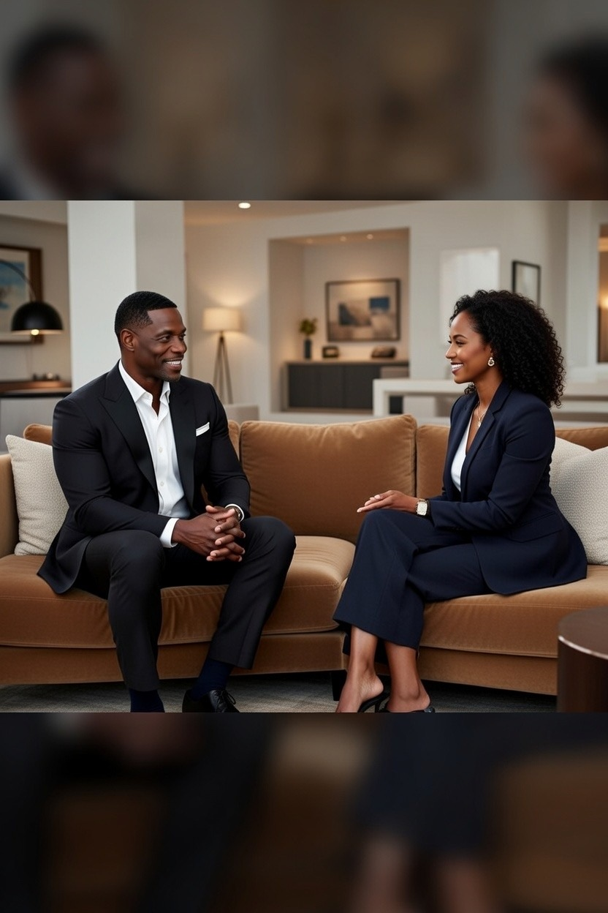
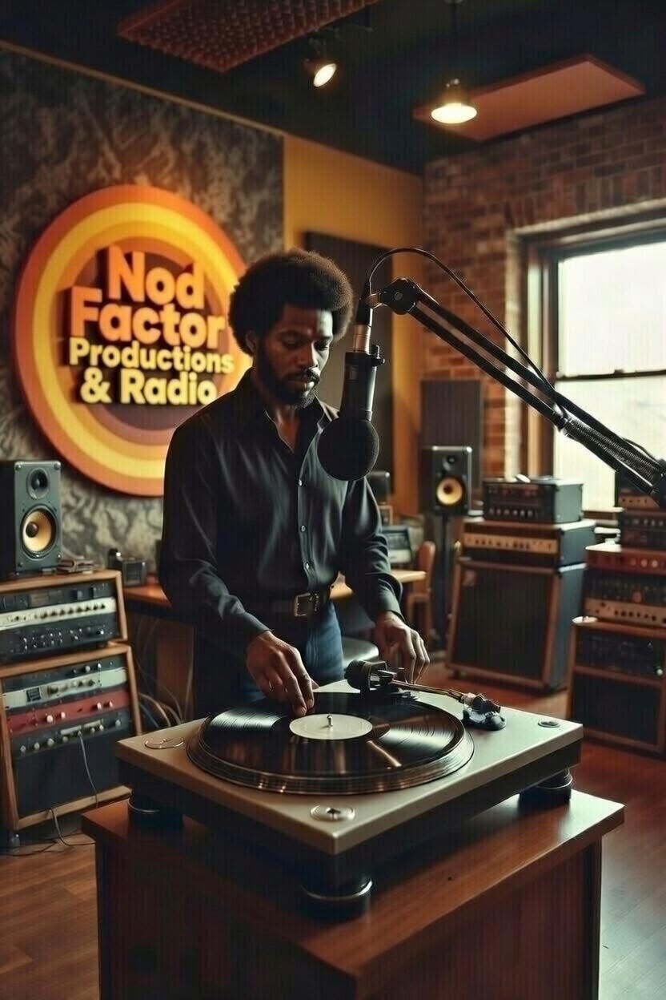
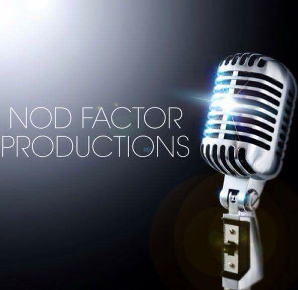
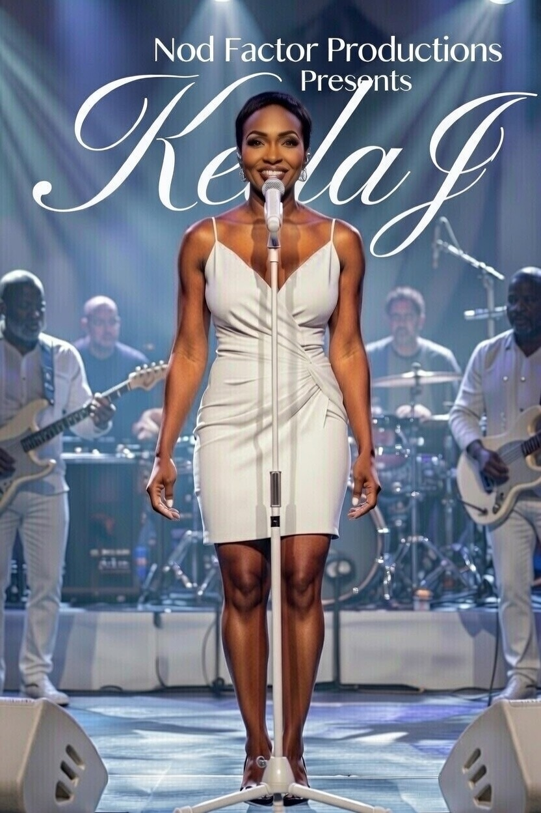

The Work · The Moments
Media & Press
Performances, conversations and creative moments from the Nod Factor world.
Selected moments
A look at the people, performances and production work behind Nod Factor Productions & Media.





